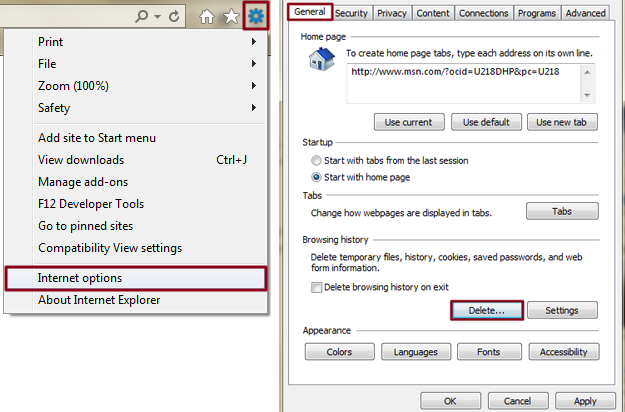
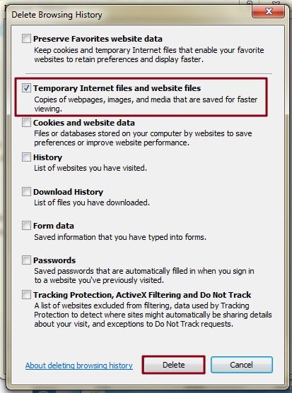

Step 1: Open settings — Launch Internet Explorer, click the Tools icon represented by the gear in the upper-right corner of the browser window, and select Internet options near the bottom of the resulting drop-down menu. Then, select the General tab located in the left-hand side of the navigation bar.

Step 2: Clear the browser cache — Click the gray Delete … button within the Browsing history section near the bottom of the resulting pop-up window, check the box directly left of Temporary Internet files and websites files — along with any other browser data you wish to clear — and click the gray Delete button in the bottom-right corner of the window.
